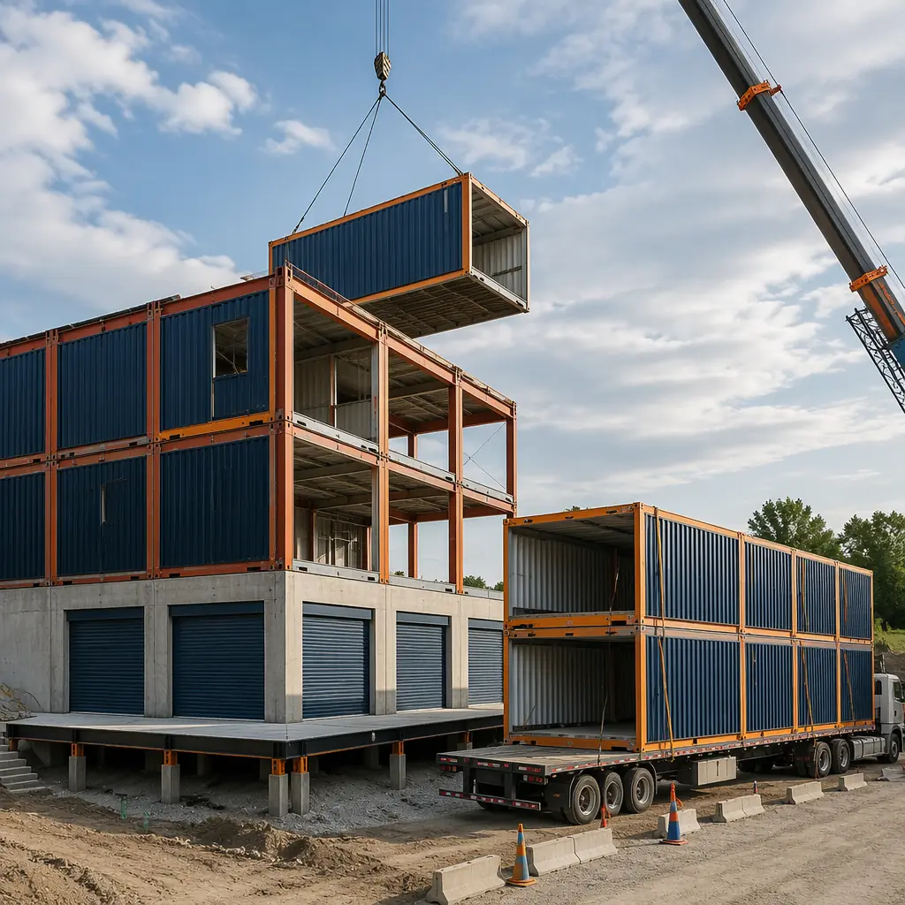
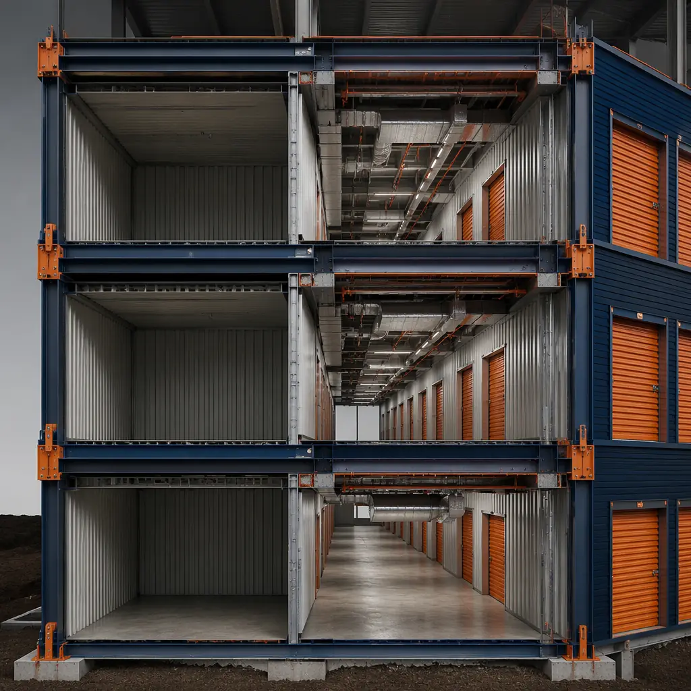
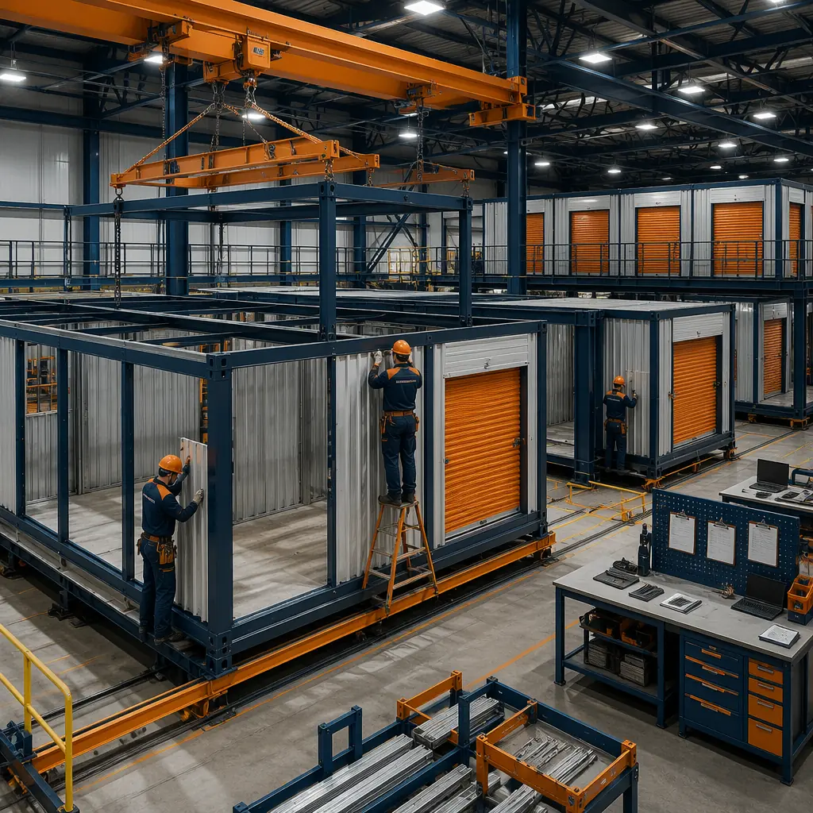

The US self-storage industry has experienced a structural demand shift that conventional construction methods are poorly positioned to serve. Industry revenue reached $48.5 billion in 2025 (IBISWorld), driven by three intersecting trends: the 11.2% of American households that now rent storage units (up from 6.3% in 2005), the urbanization wave that has placed 83% of the US population in metro areas where residential square footage per capita has declined 8% since 2010, and the e-commerce logistics transformation that has small and mid-size businesses using storage units as micro-warehouses for inventory, equipment, and fulfillment operations. A 60,000 sq ft climate-controlled self-storage facility built with conventional site construction takes 14–18 months from groundbreaking to first rental — and the 12–14 month construction phase is entirely sequential, exposed to weather, and dependent on a labor pool that the Bureau of Labor Statistics reports is shrinking at 1.3% annually. Modular self-storage construction compresses this to 7–10 months by building the storage unit modules, corridor assemblies, and MEP risers in a factory while site foundations and utility connections proceed in parallel. For a storage operator paying $18–24/sq ft annual rent for climate-controlled units, every month of accelerated occupancy on a 60,000 sq ft facility recovers $90,000–$120,000 in rent — and on a 3-5 facility portfolio rollout, modular delivery unlocks $1.5–$3 million in accelerated revenue. For a broader discussion of modular construction for commercial real estate, see our guide to modular commercial buildings and our analysis of modular retail construction.

Why Self-Storage Construction Is Ripe for Modular Disruption
Self-storage buildings are, at their structural core, repetitive cellular spaces with standardized dimensions, simple MEP requirements, and high floor-loading demands. This description — repetitive, standardized, factory-buildable — makes self-storage the most natural candidate for modular construction among all commercial building types. Yet the storage industry has been slow to adopt modular methods, largely because the sector is fragmented: the four largest operators (Public Storage, Extra Space Storage, CubeSmart, Life Storage) control only 19% of US facilities, and the remaining 81% are owned by regional operators and independent investors who lack the in-house construction expertise to evaluate alternative delivery methods.
Repetitive cellular geometry is modular's ideal use case. A typical self-storage floor plan is a grid of 5×5, 5×10, 10×10, and 10×20 units arranged along double-loaded corridors. The corridor width is fixed at 5–6 feet per building code, the unit depth is standardized to 10, 15, or 20 feet, and the ceiling height is 8–10 feet for non-climate or 8–9 feet for climate-controlled (to minimize conditioned volume). This cellular repetition means that a module containing a row of storage units and half of the adjacent corridor can be fabricated in the factory with the unit partitions, roll-up doors, corridor lighting, and fire sprinkler piping already installed — and then repeated across the building footprint. A 60,000 sq ft facility might require 200–250 modules, but those modules represent only 8–12 unique configurations (varying by unit mix and corner/edge conditions). In conventional construction, every linear foot of metal stud partition, every roll-up door header, and every sprinkler drop is built individually on site by sequential trades — 200 modules worth of repetitive work performed in the highest-cost, lowest-productivity environment. For operators evaluating modular construction for industrial building types, see our guide to modular industrial and warehouse construction.
Climate control is factory-precision work. Climate-controlled storage units command a 25–40% rental premium over non-climate units, and the premium is growing as customers store electronics, documents, pharmaceuticals, wine, and art that require stable temperature (55–80°F) and humidity (30–50% RH) conditions. Delivering this climate control in a conventionally built storage facility requires careful HVAC zoning, vapor barrier continuity at every wall-to-roof and wall-to-floor transition, and insulation that is installed without gaps, compression, or moisture exposure — all of which depend on field labor quality that varies by crew and weather conditions. In modular construction, the vapor barrier and insulation are installed in the factory under roof, the HVAC zoning is built into the module's mechanical design and tested before the module ships, and the module-to-module connections at the corridor are the only field-sealed joints — reducing the variable-quality field-work surface area by approximately 85%. The result is climate control performance that is verified at the factory, not discovered during the first summer humidity spike. For a discussion of quality control in factory-built environments, see our analysis of modular construction QA/QC systems.

Multi-Story Configuration — Maximizing Site Density in Urban Markets
The economics of self-storage development have shifted decisively toward multi-story facilities in urban and infill locations. Land costs in metro areas where storage demand is strongest — $40–$120 per buildable square foot for commercially zoned parcels — make single-story drive-up facilities economically infeasible. The industry has responded with 3- to 5-story facilities that stack storage units vertically, served by freight elevators and loading bays rather than individual drive-up access. These multi-story facilities are structurally straightforward — they are steel-framed boxes with high floor live loads (125 psf for storage occupancy, compared to 40–50 psf for office) — but the repetitive floor-to-floor construction sequence (erect steel, pour concrete-on-metal-deck floor, repeat) makes them schedule-sensitive to weather, crane availability, and concrete cure times.
Modular multi-story self-storage construction addresses these constraints by building the storage unit modules as stacked steel-framed boxes that arrive on site with floors, partitions, doors, MEP systems, and corridor finishes already installed. The modules are craned into position on prepared foundations and stacked vertically, with module-to-module connections at pre-engineered interface points. A 4-story, 60,000 sq ft facility can be erected from modules in 6–8 weeks of crane time — compared to 28–36 weeks of sequential steel erection, metal deck placement, concrete pouring, and curing for conventional construction. The schedule compression is most valuable in northern markets where the outdoor construction season is limited to 7–8 months: a conventional 4-story storage facility started in May might not be enclosed before November, pushing interior finish work into winter and delaying occupancy until the following spring. A modular facility started in May can be weather-tight within 8 weeks and fully operational by December. For comparison of modular to other accelerated construction methods, see our comparison of modular vs tilt-up construction and our analysis of modular vs precast concrete.

Security & Access Control Integration
Self-storage security is a competitive differentiator that directly affects rental rates and occupancy. The baseline security package for a modern facility includes perimeter fencing with keypad-controlled vehicle gates, individually alarmed unit doors with door-ajar sensors wired to a central monitoring panel, HD surveillance cameras with 30-day recording retention, and biometric or keypad access control at building entries and elevator landings. In conventional construction, the low-voltage cabling for these systems is installed after framing and before drywall by a security subcontractor who must coordinate door sensor conduit routing, camera mounting back-box placement, and access control reader rough-in with the electrical and drywall trades — a sequential dependency that frequently results in missed conduit stubs, misaligned back-boxes, and change orders averaging 6–10% of the security contract value.
In modular construction, the door sensor wiring, camera back-boxes, and access control conduit are installed in the factory where the module's steel framing provides precise, repeatable mounting points. The central monitoring panel location, the head-end equipment rack, and the vertical cable risers between floors are pre-designed into the module interface points. The result: a security system that is 80–90% pre-installed and pre-tested before the modules arrive on site, with only the inter-floor riser connections and the perimeter gate integration remaining as field work. For storage operators who have experienced the cost and schedule impact of security system change orders on conventional construction projects, this factory-integrated approach eliminates the single largest source of low-voltage construction defects. For additional insight on integrated building systems in modular construction, see our analysis of BIM-to-factory digital workflows.
Cost Structure — What Storage Operators Actually Pay
Self-storage construction costs vary significantly by region, building height, and climate control coverage, but the cost structure follows patterns that allow meaningful comparison between modular and conventional delivery methods. The following analysis uses a 3-story, 60,000 sq ft climate-controlled facility (800 units, 70% climate-controlled, 30% non-climate) on a 1.5-acre suburban site as the reference case.
| Cost Category | Conventional ($) | Modular ($) | Difference |
|---|---|---|---|
| Structure & shell (60,000 sq ft at $85–110/sq ft) | 5,100,000–6,600,000 | 4,500,000–5,400,000 | −12–18% |
| Climate control MEP (HVAC zoning, dehumidification, insulation) | 720,000–900,000 | 600,000–720,000 | −17–20% |
| Security & access control (pre-installed in modules) | 180,000–240,000 | 130,000–160,000 | −28–33% |
| Unit doors & partitions (factory-installed) | 320,000–400,000 | 280,000–340,000 | −13–15% |
| Total hard cost | 6,320,000–8,140,000 | 5,510,000–6,620,000 | −13–19% |
The largest cost savings in modular storage construction come from the structure/shell and climate control MEP categories — the same categories that are most exposed to weather delay, labor availability, and trade coordination risk in conventional construction. For a comprehensive cost comparison across building types, see our 2026 modular construction pricing guide. For financing guidance, see our guide to modular construction financing and our analysis of insurance and risk management.
Site Selection & Zoning Considerations
Self-storage facilities face zoning challenges that differ from other commercial building types. Most municipalities zone self-storage as a conditional use in commercial and industrial districts, requiring a public hearing and planning commission approval that adds 4–8 months to the pre-construction timeline. The conditional use process typically requires the developer to demonstrate that the facility design addresses traffic impact (storage generates 1/3 to 1/10 the vehicle trips of retail per square foot), visual impact (no unit doors visible from public rights-of-way, architectural treatment of blank facades), and stormwater management (the large roof area of single-story drive-up facilities requires detention basins that consume 15–25% of the site area).
Multi-story modular storage facilities address several of these zoning concerns directly: the smaller building footprint (25–35% site coverage vs 45–55% for single-story drive-up) reduces stormwater runoff and preserves more permeable surface area, the architectural exterior can be designed as a commercial office or light industrial facade (eliminating the "garage door wall" that zoning boards often reject), and the shorter construction timeline reduces the duration of construction traffic and noise impacts on adjacent properties. For storage developers navigating municipal approvals, the modular construction timeline advantage can be presented to planning commissions as a community benefit: the project generates tax revenue and serves resident storage demand 6–12 months sooner than conventional construction. For guidance on the permitting process, see our developer's guide to modular construction permitting and zoning.
Is Modular Right for Your Storage Development?
Modular self-storage construction is not the right solution for every project — but it is the right solution for a specific profile that represents the highest-growth segments of the storage development pipeline: urban and infill multi-story facilities where land costs demand maximum site density, climate-controlled facilities where HVAC and vapor barrier performance directly affects rental premiums and operating costs, and portfolio rollouts where standardized facility designs deployed across multiple sites amortize the prototype engineering investment across higher unit volumes. The self-storage development pipeline reached $7.2 billion in construction starts in 2025 (Dodge Data & Analytics), and the 5.8% annual growth rate projected through 2030 is concentrated in exactly the facility types — multi-story, climate-controlled, urban infill — where modular construction's factory precision, schedule compression, and weather-independent production deliver the strongest advantages. For developers and operators who have watched conventional storage construction timelines stretch across multiple construction seasons, modular delivery offers a structural alternative that aligns construction speed with the market's demand for ready-to-rent square footage.